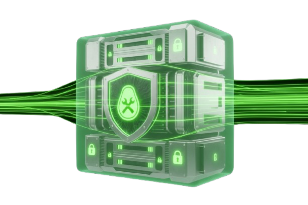

Administration et support
Administration de comptes et de services sous Active Directory, traitement de demandes utilisateurs, déploiement de postes et participation au support N1/N2 dans un cadre où rigueur et réactivité vont de pair.
Systèmes • réseaux • cybersécurité
Étudiant en BTS SIO option SISR, je me spécialise dans l'administration des systèmes et des réseaux, avec un intérêt marqué pour la sécurité.
Orienté vers les fondations du système d'information, je cherche à les rendre fiables, lisibles et plus faciles à exploiter dans la durée.
Pourquoi SISR
L'option SISR correspond à ce que je recherche dans l'informatique : administrer des systèmes, comprendre les dépendances réseau, structurer un environnement technique et garantir un service exploitable dans la durée.
Cette orientation m'a amené à travailler sur Windows Server, Active Directory, la virtualisation, la supervision et les problématiques de sécurité opérationnelle.

Ce que je fais
Mes stages au SIS 67 m'ont permis d'intervenir dans un environnement où l'administration, le support, la supervision et la sécurité doivent rester fiables dans la durée. J'y ai découvert une approche concrète de l'infrastructure, au contact de besoins techniques réels.
Administration de comptes et de services sous Active Directory, traitement de demandes utilisateurs, déploiement de postes et participation au support N1/N2 dans un cadre où rigueur et réactivité vont de pair.

Déploiement d'une supervision d'infrastructure avec Zabbix, structuration des hôtes, tableaux de bord et alertes pour offrir une lecture plus claire et plus exploitable de l'état du parc.

Mise en place d'un bastion d'accès distant, analyse d'un incident d'authentification Kerberos et sécurisation des accès d'administration avec une approche plus structurée.
Objectif 2026
En fin de BTS SIO, je recherche une alternance pour intégrer un cycle supérieur (Bac+3 ou cycle d'ingénieur) dès septembre 2026, avec l'ambition de renforcer mon niveau technique, ma vision d'architecture et ma capacité à intervenir sur des environnements exigeants.
Je souhaite continuer à progresser sur les sujets d'administration sécurisée, de supervision, de défense des infrastructures et d'exploitation en contexte professionnel.